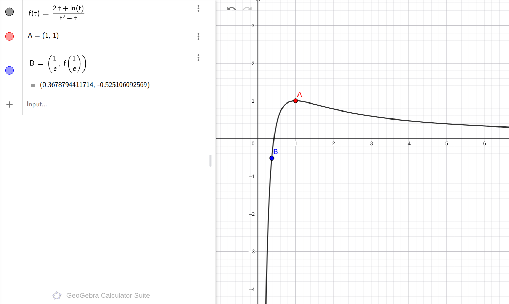

\(f(x)=ae^{2x}+(a-2)e^x-x\), 在 \((-1,+\infty)\) 有零点. 求 \(a\) 范围.
解答
同样可以分参, 移项, 变成:
\[\exists x>-1,\quad a=\frac{2e^x+x}{e^{2x}+e^x}\]
问题变为求这个函数的值域, 在 \((-1,+\infty)\) 上
换元, 令 \(t=e^x\), 它的取值范围就是 \((\dfrac{1}{e},+\infty)\), 变成:
\[f(t)=\frac{2t+\ln t}{t^2+t}\]
求其值域. 求导得:
\[f'(t)=\frac{(2t+1)(1-t-\ln t)}{(t^2+t)^2}\]
其中 \(1-t-\ln t\) 在 \(t=1\) 的时候为 \(0\) 且递减, 而 \(2t+1\) 恒为正. 所以:
\[f(t):\quad (\frac{1}{e},1)\uparrow (1,+\infty)\downarrow\]
因此最大值自然就是 \(f(1)=1\)
最小值需要费点劲, 下图展示了 \(f(t)\) 的直观图像和最大最小值点, 帮助理解

根据我们的极限思想, \(t\to +\infty\) 的时候, \(f(t)\gt 0\) 且一直靠近 \(0\)
而 \(f(\dfrac{1}{e})=\dfrac{e(2-e)}{1+e}\lt 0\)
所以 \(t=\frac{1}{e}\) 的位置是最小值, 但是注意 \(t\) 的范围, 这个点取不到
所以值域, 也就是 \(a\) 的范围, 为:
\[(\frac{2e-e^2}{1+e},1]\]
tags: 恒成立, 恒成立-直接分参